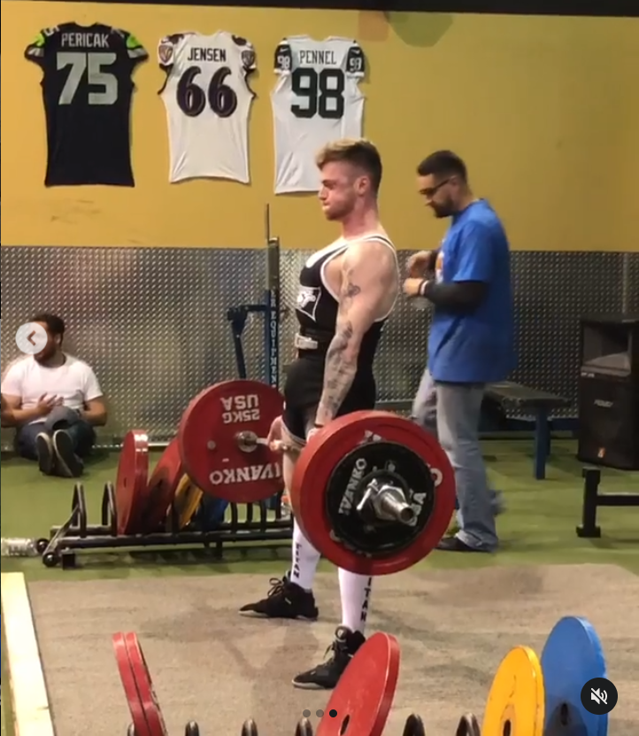
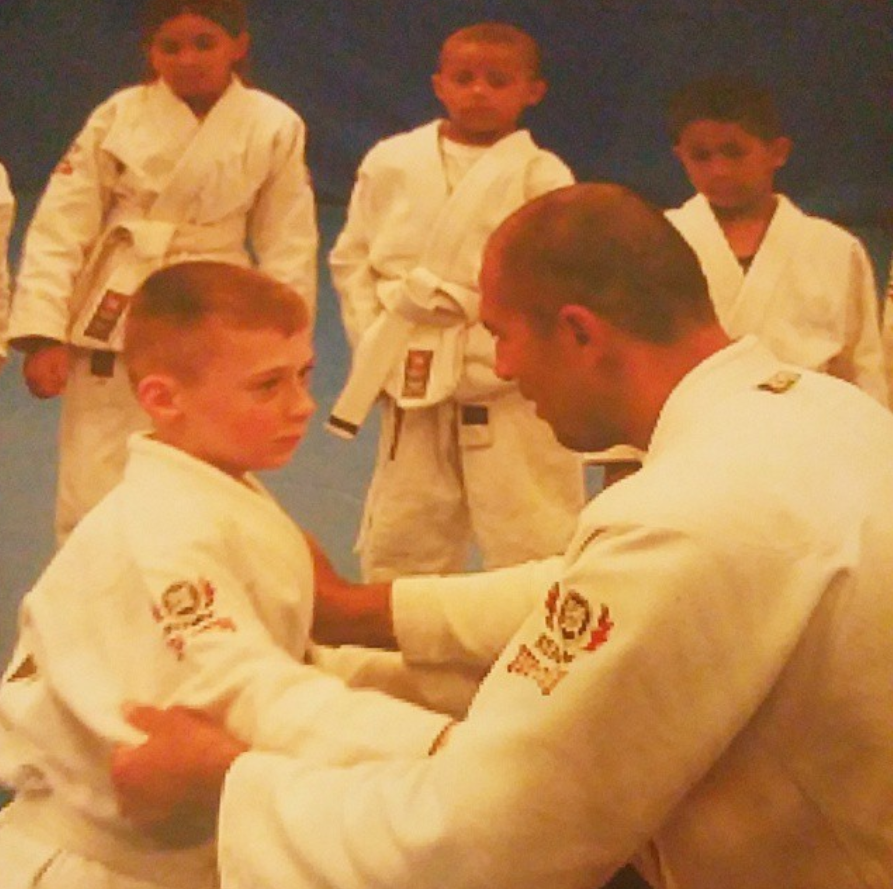

Pictured: the author finishing his last deadlift attempt during a
powerlifting competition.
My powerlifting journey began in early 2017,
upon competing in my first powerlifting meet. However, for many of
the years leading up to that point, I was always involved in some
sort of fitness related activity. Prior to powerlifting, I focused
mainly on bodybuilding style training which involved staying in the
higher repetition range (6-15) and having a high amount of exercise
variation (to ensure a well-rounded physique).
My first exposure to powerlifting
happened when I came across a YouTube video of a couple guys lifting
some serious weight. I instantly became intrigued by this and
started to research powerlifting training. Powerlifters have one
goal; to get as strong as possible for a 1 repetition maximum in the
squat, bench press, and deadlift. In competition, the winner in each
weight class is determined by who has the highest total (squat +
bench + deadlift). Therefore, much of their training is spent in the
lower rep range (1-6) with an exercise selection focused on helping
the competition lifts, as this is more specific to what is seen in
competition. Although it is an
individual sport, many powerlifters are a part of a team for
support, to share ideas related to training theory, and to make
friends. Every powerlifting competition I've been to, I've
experienced and unparalleled amount of friendliness and camaraderie.
It is clear that the competitor's main goal is to simply do better
than they did last time, regardless of the results of the
competition.
Brazillian Jiu-Jitsu

Pictured: the author learning technique from BJJ legend Royce
Gracie, circa 2006.
I started doing Brazillian Jiu-Jitsu (BJJ)
when I was 11, and continued to do so on and off until I joined the
Army about 7 years later. BJJ is a submission-grappling based
fighting sport that was brought to the states from Brazil in the
1970s, via the Gracie family. The novelty of BJJ is that it's
techniques are focused on using leverage to overcome bigger or
stronger opponents. This was first realized by the world in 1993
during the first ever UFC tournament, involving Royce Gracie of the
Gracie family.
Royce successfully won the tournament
by submitting all three of his opponents in the first round. Since
seeing BJJ dominating every other martial art, mixed martial arts
practitioners have placed a large emphasis on having a strong BJJ
foundation. Doing BJJ gave me a lot of confidence early on in life
as well as something I can be proud of. This was something I
desperately needed at that point, because my early childhood wasn't
the best. Also, knowing that I have the skills to defend myself and
the ability to teach others was invaluable. This experience came in
handy later on in life when I was given the opportunity to be a
combatives instructor in the Army for some time.
Trading equities (stocks) is something that
is relatively new to me. I started about a year and a half ago and
that first year was spent just learning how the market works and
where I can fit in. There are many different ways to make money in
the market in terms of what you can trade (currencies, stocks,
futures, etc.) and how you trade it (time frames, strategy, etc.).
As for me, I became intrigued with learning to trade short-term
momentum stocks. Watching my trading
mentor make thousands of dollars 30 minutes after market open
instantly piqued my interest. He made it look so easy, but I soon
found out that trading is extremely hard and exausting. Even after
learning several strategies, my first couple months of trading were
an emotional rollercoaster. Little did I know that all the trading
knowledge in the world couldn't save me from the lonely, silent
struggle of being a beginner trader. Having a strategy and a plan
for every trade is important, but your ability to execute is
paramount. Trade execution is heavily influenced by trader
psychology. For example, when you are in a losing trade, it can be
quite tempting to stay in and hope things turn around, which can
lead to a monstrous loss.
Statistically, 90% of new traders 'blow up', or lose
all of the money in their account, and I believe this is mainly due
to their psychology and not properly managing risk. There were so
many times where I wanted to give up, but I kept reminding myself
that winners never quit. Today, I like to think that I've got a
pretty good handle on trading. Fun fact: I actually became
interested in learning how to program because I want to automate my
trading systems. Then, I fell in love with programming and now I
want to make a career out of it.